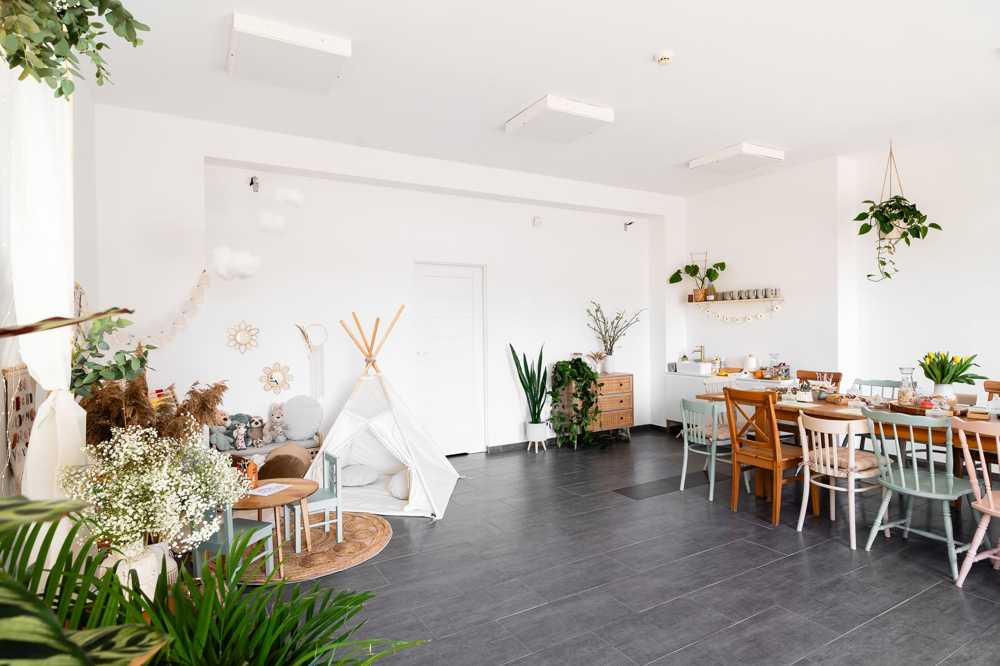
monaRT
przestrzeń twórcza
Przytulna przestrzeń twórcza dla dzieci i dorosłych.
Pracownia z ciepłem domu
Miejsce, w którym można zwolnić, ubrudzić dłonie farbą i stworzyć coś własnego.
monaRT łączy jasną, naturalną estetykę z kameralną atmosferą spotkań. Jest tu przestrzeń dla dziecięcej ciekawości, rodzinnego bycia razem i dorosłych wieczorów z ceramiką, makramą, ziołami albo malowaniem.
- 699+
- osób blisko twórczego świata monaRT
- 99+ m
- sznurków, splotów i makram
- 200+
- kolorów wymieszanych na paletach
- 60+
- małych dzieł zabranych do domu
Co możesz u nas zorganizować
Spotkania, które mają piękną oprawę i własny rytm.
01Warsztaty rodzinne
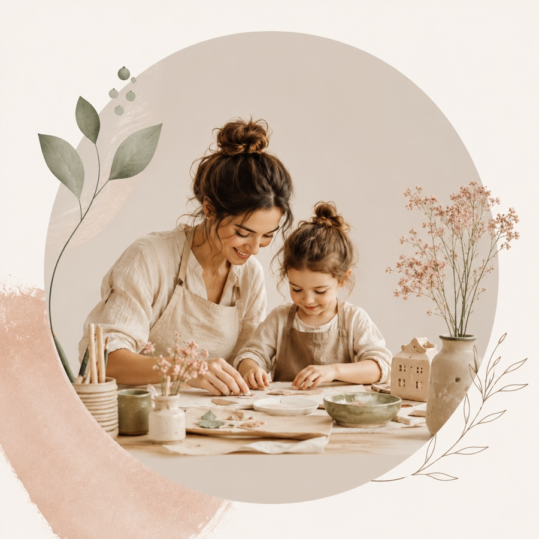
Rodzinne tworzenie przy jednym stole, w ciepłej atmosferze i z materiałami gotowymi na miejscu.
02Urodziny
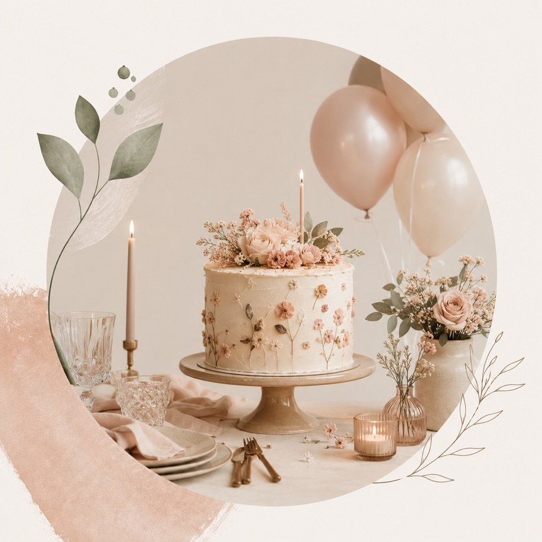
Artystyczne przyjęcia dla dzieci i kameralne spotkania, które zostają w pamięci na długo.
03Baby Shower
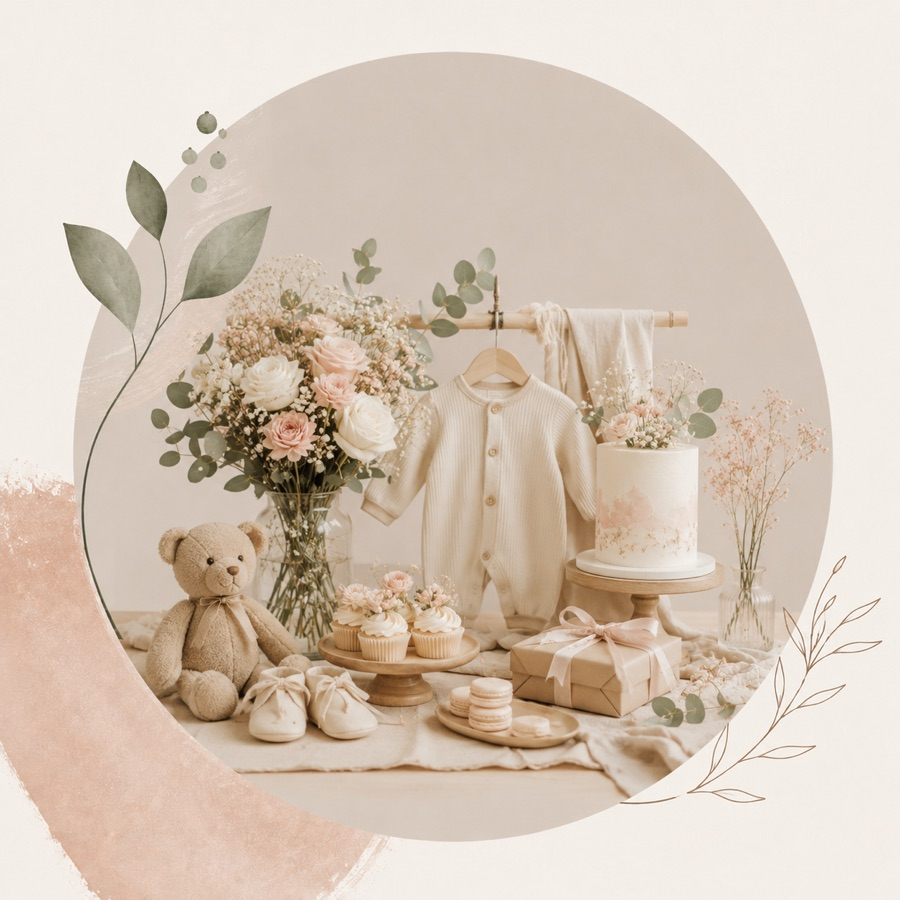
Delikatna oprawa, kwiatowy klimat i twórczy czas celebrowany bez pośpiechu.
04Wieczory Panieńskie
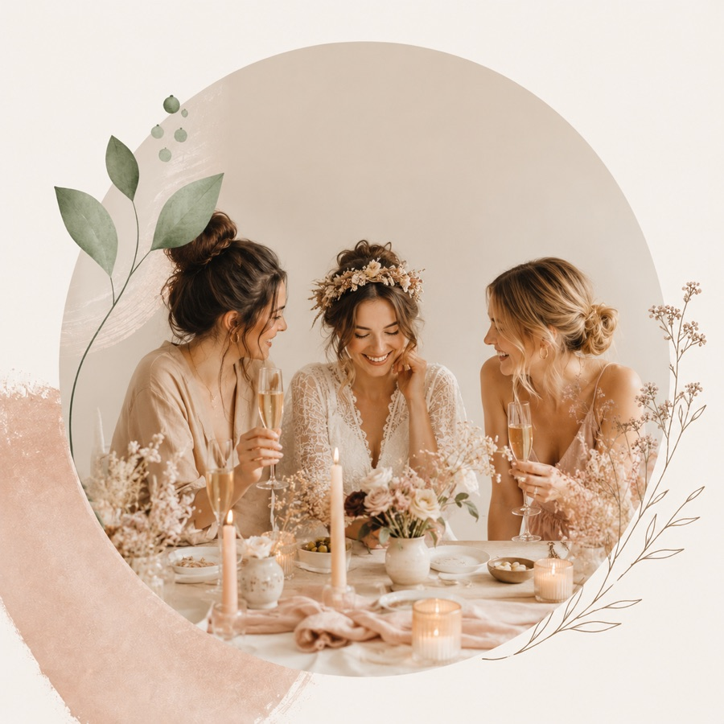
Spotkania przy kwiatach, rękodziele i rozmowach, w swobodnym, eleganckim klimacie.
05Zajęcia kreatywne
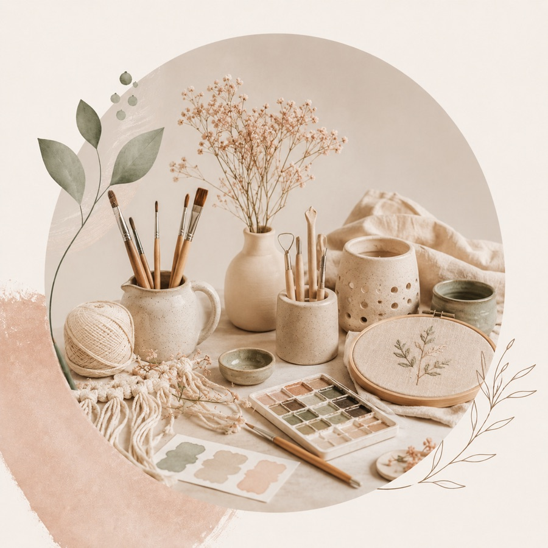
Ceramika, haft, makrama, malowanie i inne twórcze formy dla dzieci i dorosłych.
06Półkolonie i plenery
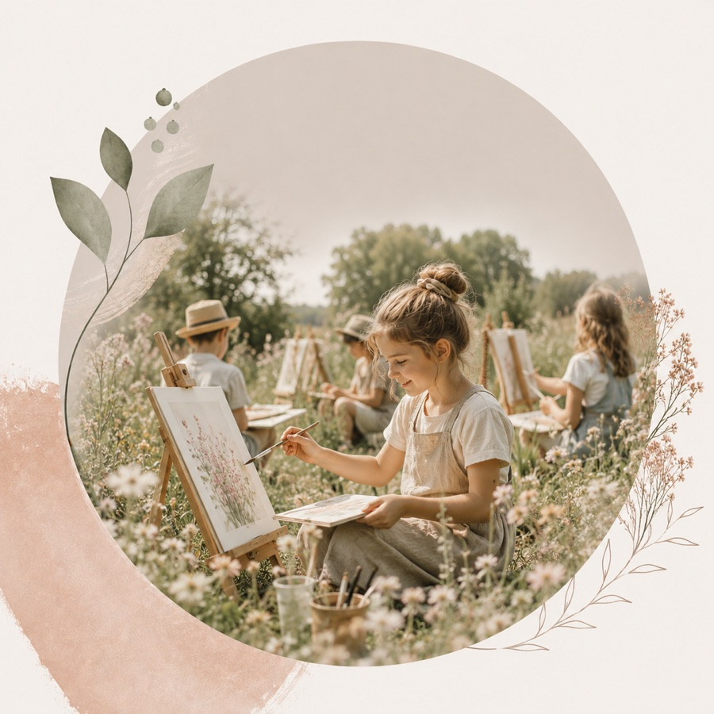
Sezonowe spotkania pełne natury, kolorów i inspiracji dla małych artystów.
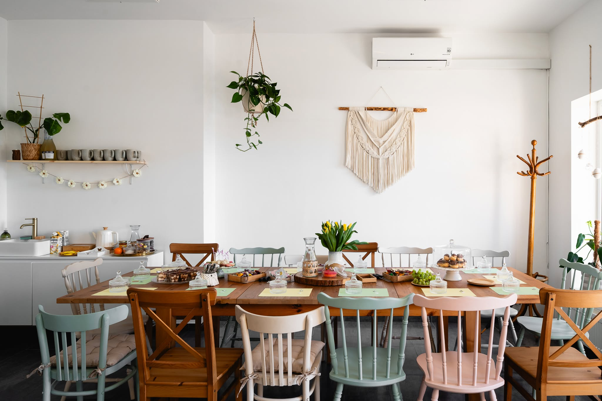
Spotkania na zamówienie
Urodziny, rodzinne warsztaty i kobiece wieczory w pięknej oprawie.
Przygotowujemy temat, materiały i oprawę spotkania. Ty przychodzisz z gośćmi, a monaRT prowadzi twórczą część wydarzenia w spokojnym, pięknym rytmie. Uczestnicy wychodzą z własnoręcznie wykonaną pamiątką.
Jak wygląda spotkanie
Spokojny proces, który prowadzi od pomysłu do pięknego wspólnego czasu.
Rezerwujesz termin
Kontaktujesz się przez Facebook lub telefon, a my sprawdzamy dostępność i dogodny moment.
Dobieramy temat
Wybieramy formę spotkania, klimat i aktywność dopasowaną do wieku, okazji albo grupy.
Przygotowujemy materiały
monaRT dba o oprawę, narzędzia i detale, żebyście mogli wejść od razu w twórczy nastrój.
Tworzycie i celebrujecie
Spotykacie się, tworzycie w pięknej atmosferze i zabieracie ze sobą własnoręczne pamiątki.
Więcej inspiracji
Odwiedź nasz profil na Facebooku.
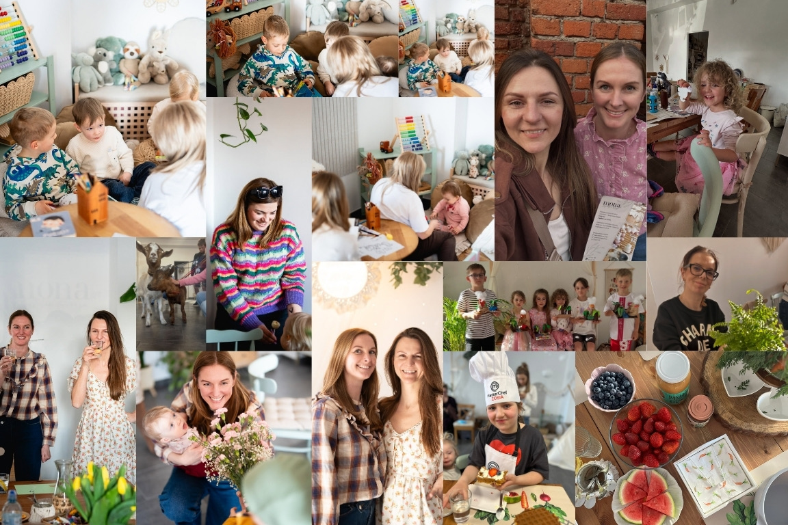
Aktualne terminy, zapowiedzi spotkań i nowe zdjęcia z pracowni publikujemy na Facebooku. Zobacz, co dzieje się w monaRT i napisz, jeśli chcesz zapytać o miejsce na najbliższych warsztatach.
Tworzymy dla
Dla tych, którzy chcą spotkać się, stworzyć coś własnego i dobrze spędzić czas.
Dzieci
Dorosłych
Rodzin
Grup przyjaciółek
Firm i kameralnych zespołów
Świat monaRT
Twórcze kierunki, spotkania i estetyka, które tworzą ten świat.
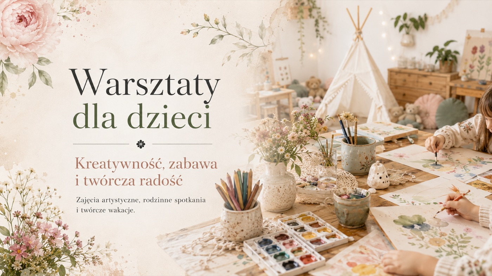
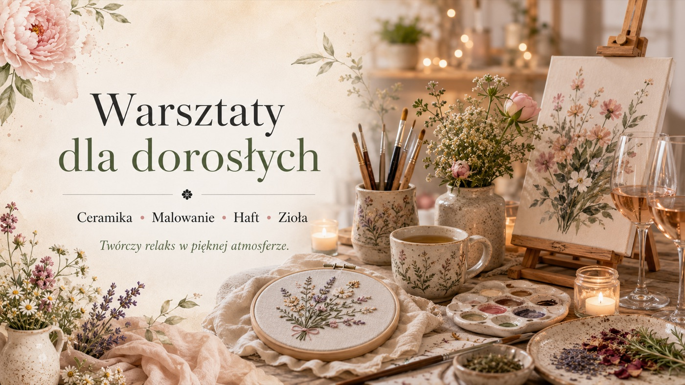
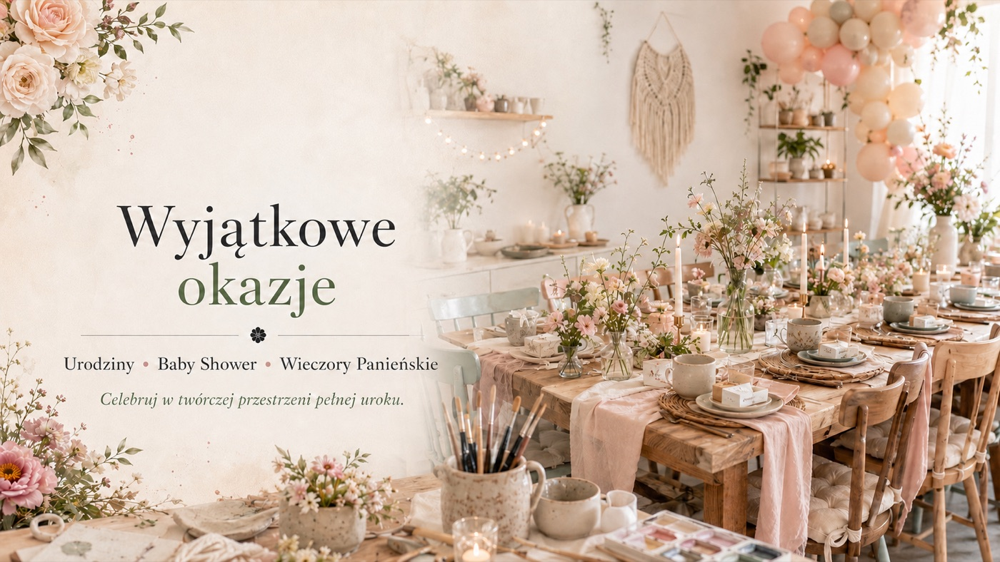
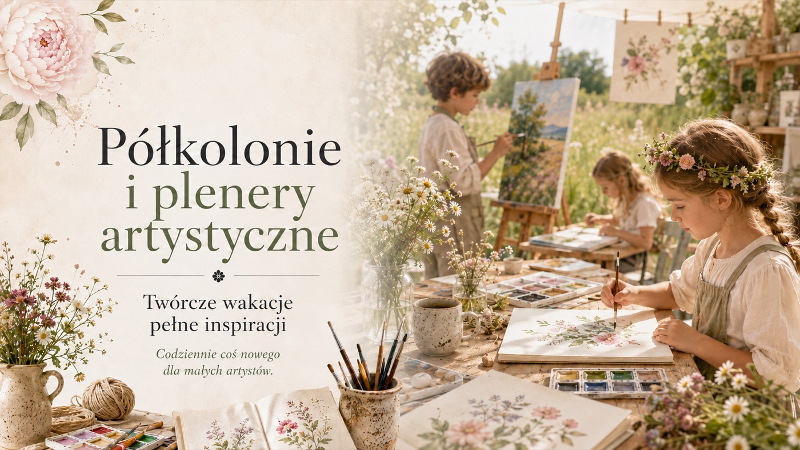
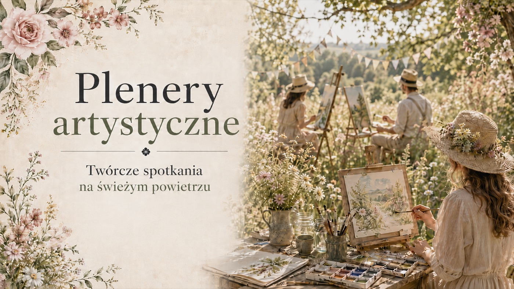
Tu liczy się atmosfera: spokojna, ciepła i twórcza.
Zapisy i kontakt
Stwórzmy coś pięknego razem.
Najszybciej odpowiadamy na Facebooku. Napisz, jaką okazję chcesz zorganizować, dla ilu osób i w jakim terminie.